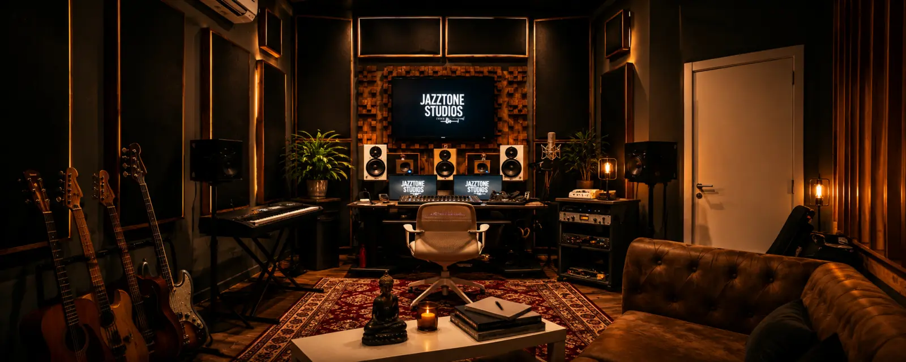

·
Genre and mood
Listen

Composer · Producer · Artist
Film
4 feature films
Additional music for four Mexican feature films released in cinemas and on streaming in 2022 and 2023, within the music teams of composers Juan Carlos Enríquez and Pablo Delgado.
· Additional music
· Additional music
· Additional music
· Additional music
·
Genre and mood
Listen
0 / 0
Mood
Genre
No recordings match this search.
Academic work
3 academic exercises
Academic exercises, not commissioned work: none of these brands hired, sponsored or worked with me, and they are not clients. I composed and produced the original jingles myself. What you hear here are later versions made with an AI music tool (Suno) from that original work: the vocals, instruments and mix in these recordings were generated by AI and may differ from my original productions, which are not shown.
Academic exerciseAI-Generated Version
0:34
Academic exerciseAI-Generated Version
0:59
Academic exerciseAI-Generated Version
1:00
Brand and product names belong to their owners and are used only to identify each exercise. No logos are used.